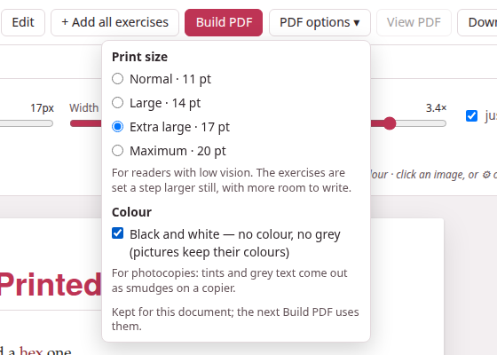
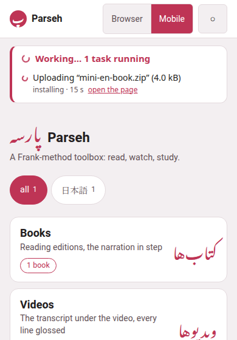

What changed recently
The features below arrived together, in September 2026. Each has a line or two here on what it does and a link to the page that explains it in full. After updating, run the installer once more (After updating Parseh): it compiles this guide and rebuilds the readers.
1. Links between documents, by name#
A link from one studio document to another used to name the target by a code nobody could read. It now names it by its name — its title, exactly as its title: line spells it:
[the companion piece](doc:Verbs of motion)[](doc:The shape of a Persian word)The second, with nothing between its brackets, shows the other document’s title as it is now. What follows from that:
- Names are unique.
- No two documents of one library — the studio’s, or the notes of one book or one video — share one. Whenever a save, a new document, Paste LLM answer, Upload .md / .zip or Load from backup would take a name already in use, nothing is written and a dialog opens, This name is already in use, with a field to rename the document already there, a field to rename the one coming in, or both. A name still taken is said under its field, and the dialog stays open.
- Renames follow into every link.
- As in Obsidian, change a document’s title and every link that named it — in other documents, in itself, in the exercise decks — is rewritten to the new name, its shown text kept.
- A link to a deleted document is left hanging.
- It is drawn red and dashed, and works again the moment a document of that name exists — made, uploaded, restored or renamed.
- ↩ Linked from (N).
- Beside ☰ Contents on a document’s page, it opens a drawer listing every document that links to this one, each with a few words around the link.
- Doc link…
- in the editor writes the link for you. Links written the old way still work, and were rewritten by name the first time the server met each library — the studio’s when it started, a book’s or a video’s notes when they were first opened.
- Two documents that shared a name were told apart then too.
- Nothing forbade it before — a book’s notes were all called A note — so that same first time, the oldest kept the name and each later one got a number after it, in its header: A note 2, A note 3 and so on. A title that suddenly ends in a number is one of those: rename it as you like.

All of it: Names and links.
2. The enlarged flashcard#
⤢ Enlarge on a flashcard opens the same card over the page, laid out exactly as it is on the page — every field where it sits there, a right-to-left paragraph on the right, a Latin block to its side, every line breaking where it breaks there — and then magnified as much as the window allows. On a phone it is laid out a little narrower instead, so it can be up to twice as large, though a line that is whole on the page stays whole: only a paragraph that already wraps there may wrap at other words. A click, Space or Enter turns it; Escape closes it. See Flashcards and Studying.
3. The RTL editor#
For a document whose prose is a right-to-left language — a Persian teaching English to Persians — ⇤ RTL editor in the editor’s bar sets the whole source right to left, in the face of that language, every line of it, a prompt: or meaning: with a Persian sentence included (a line of Latin letters alone then reads as any right-to-left editor draws it); ⇥ LTR editor turns it back. A document whose lang: is Persian or Arabic opens right to left by itself, and the choice you make is remembered for each document. Only the source box changes; the preview is drawn as before. See Writing in the editor.
4. Large print, and black and white#
PDF options ▾, beside Build PDF on a document’s page:
| Option | For |
|---|---|
| Print size: Normal · 11 pt, Large · 14 pt, Extra large · 17 pt, Maximum · 20 pt | Readers with low vision. Everything grows with the text, and the exercises a step larger still, with more room to write. |
| Black and white — no colour, no grey (pictures keep their colours) | Photocopies: the tints go white, coloured words print black. |

The choice is kept for each document, and the build badge says what a PDF was built with (17 pt · B&W), and built with other options — rebuild when the menu now says otherwise. Large print needs the TeX package extsizes, which ./install.sh --pdf installs (on Windows, your TeX’s package manager: MiKTeX Console, or the TeX Live Manager). See Printing to PDF.
5. Exercises laid out for a pen#
On paper, and only on paper:
- Matching
- — every entry of both columns in a frame of its own, the columns equally wide, with a gap between them for the line the student draws.
- Construct the sentence
- — the chunks in a row, each framed, and under them lines to write the whole sentence on: as many as it takes to hold one and a half times the sentence, measured as it is set.
- True / false and yes / no
- — each statement wraps in a column of its own, and the marks sit in a column at the right, level and aligned on every row.
See Exercises on paper.
6. Working…#
Whatever takes a while — a book being built, an upload, a download being packed, a backup, a restore, a narration being aligned, a studio PDF, a dictionary being fetched — now shows on every page until it is over: a pill in the corner says Working: and what, with +N more when there are several. Click it for the list, each with its time, its progress where it is counted and open the page it was started from; shrink folds it to its spinner. The hub lists the same in a Working… panel under its bar, and every stop button says what is still running before it stops the server.

7. The size of “all of it”#
A narrated book’s download sheet now says how big each of its three shapes is, and all of it counts every recording — a book read in nine parts carries nine files — where it used to count only the first. A reader built before this says the old figure until rebuild the reader. The player’s ⤓ says the same of a film on this machine. See Taking a book away.
8. Browser | Mobile#
The hub’s top bar has a new switch. Browser is every page as it has always been. Mobile is a streamlined set of pages for reading on a phone, with no editing on them: a single column, big doors with their counts, the language chips in one row, and the guide — and nothing that edits or administers. The choice holds on every page and after a reload. The hub was the first mobile page; the books — a shelf, and every book’s reader as a reader only, with ↺ ↻ to move the narration by ten seconds (or as many as you set) — and the exercise decks have followed: a cram of your own picked from a deck, by tag or one by one, and Next in the very place Check was. Every mobile page is made for a phone held sideways as well as upright. And the mobile interface installs as an app: an icon on the home screen, the whole screen for the page, no address bar (Parseh as an app). The videos and the studio’s notes open their browser pages until their own mobile ones are written.
On a phone, a fill-in’s blank and a matching exercise’s box are filled the other way round: tap the blank or the box, and a cloud offers the words of the bank below (Placement, Matching).
Cram mode has Skip too, as studying has, and its end now says how it went and lists the exercises you got wrong at least once and the ones you skipped — each shown solved at a click, and crammed again at one (Cram mode).

See Browser and Mobile.
9. This guide#
The hub’s guide button now opens these pages, at /guide/, rather than the PDF manual — which stays, one click away, as PDF manual at the top of every page. The pages have a list on the left, a search box that finds any word on any page, the three themes, and working examples of everything the studio’s Markdown can hold.
- The installers compile the guide every time they run;
./install.sh --guidecompiles it alone. - When Parseh serves it and the pages are missing, the front page offers Compile the guide; when they are older than their Markdown, Compile the guide again.
- Opened straight from the disk (
html-guide/index.html), it needs no server at all. - It can be published on GitHub Pages, and taken into a project of its own.
Writing this guide explains how the pages are written, and Compiling and publishing how they are compiled and published.
10. New starter pages#
+ New in the studio opens a new document on a page written afresh for each of the eleven languages: a guided tour, in English, of everything a document can hold — boxes, headings, target-language runs and blocks, readings and colours, lemma headings, tables, footnotes, links by name, formulas, pictures, a recording, a video, and one exercise of every kind — with correct examples in that language. It ships with two pictures and a short chime, which become the document’s own when it is saved; delete what you do not need. See The library page and The Markdown dialect.